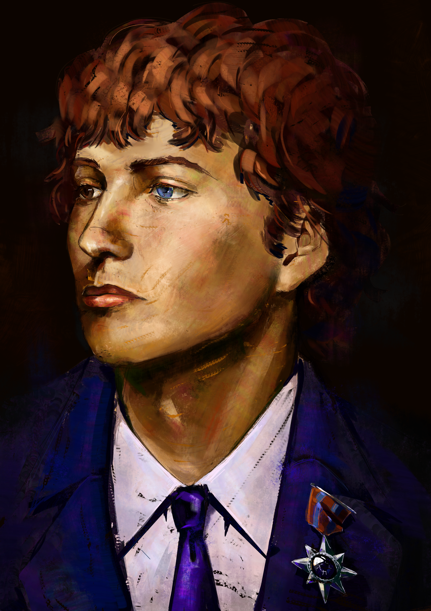

O posto de Presidente do Goberno é o posto que corresponde ao segundo ao mando na xefatura do goberno, a quen lle corresponde, xunto co Comisario Xeral, dirixir o poder executivo. A súa investidura realizase por elección directa cada 10 anos, e o posto é xurado ante o Comisario Xeral e a Constitución.
A actual presidenta do goberno é Khaleda Ahmed, mentres que seguen vivos 3 expresidentes: Miguel Cruz, Norma Lucía Piña Hernández e Carla Beck.
Na historia do posto houbo un total de 37 presidentes, dos cales 20 foron homes, 16 foron mulleres e un foi do terceiro sexo.
Listado
| Xefe do Goberno | Lexislatura | Goberno | Presidente do goberno | Partido | Nomeamento | Cese | Tempo no cargo |
|
 Cássidy Ortiz Medina |
I | Alexandria I |
 Alexandria Ocasio-Cortez
Alexandria Ocasio-Cortez
|
Dereito e Democracia | 24 de Agosto de 2044 | 10 de Septembro de 2054 | 10 anos e 15 días |
| II | Valeria I |
 Valeria Racu
Valeria Racu
|
Unión de Socialistas Eridanenses | 10 de Septembro de 2054 | 28 de Novembro de 2064 | 20 anos, 3 meses e 21 días | |
| III | Valeria II | 28 de Novembro de 2064 | 2 de Xaneiro de 2075 | ||||
| IV | Nicolas I |
 Nicolas Azevedo Barbosa
Nicolas Azevedo Barbosa
|
Dereito e Democracia | 2 de Xaneiro de 2075 | 8 de Febreiro de 2085 | 10 anos, 1 mes e 6 días | |
| V | Kampol I |
 Kampol Homsut
Kampol Homsut
|
Partido Conservador Eridanense | 8 de Febreiro de 2085 | 4 de Abril de 2095 | 22 anos, 7 meses e 8 días | |
| VI | Kampol II | 4 de Abril de 2095 | 2 de Maio de 2105 | ||||
| VII | Kampol III | 2 de Maio de 2105 | 16 de Septembro de 2107 | ||||
| Yukiyo I |
 Yukiyo Kanou
Yukiyo Kanou
|
Independente | 16 de Septembro de 2107 | 19 de Septembro de 2107 | 3 días | ||
| VIII | Generosa I |
 Generosa Manna
Generosa Manna
|
Dereito e Democracia | 19 de Septembro de 2107 | 8 de Outubro de 2117 | 10 anos e 18 días | |
| IX | Charles I |
 Charles Smyth
Charles Smyth
|
Partido Conservador Eridanense | 8 de Outubro de 2117 | 19 de Xaneiro de 2128 | 10 anos, 3 meses e 11 días | |
| X | Generosa II |
Generosa Manna
|
Dereito e Democracia | 19 de Xaneiro de 2128 | 19 de Xaneiro de 2138 | 10 anos | |
| XI | Shahidat I |
 Shahidat Eldarkhanov
Shahidat Eldarkhanov
|
Partido Conservador Eridanense | 19 de Xaneiro de 2138 | 3 de Marzo de 2148 | 10 anos, 1 mes e 13 días | |
| XII | Leah I |
|
Partido Conservador Eridanense | 3 de Marzo de 2148 | 6 de Agosto de 2158 | 10 anos, 5 meses e 3 días | |
| XIII | Fung I |
 Fung Ka Ling
Fung Ka Ling
|
Unión de Socialistas Eridanenses | 6 de Agosto de 2158 | 25 de Xullo de 2168 | 9 años, 11 meses, y 19 días | |
| XIV | Fahd I |
 Fahd Kazim Qureshi
Fahd Kazim Qureshi
|
Dereito e Democracia | 25 de Xullo de 2168 | 12 de Septembro de 2178 | 20 anos, 4 meses e 5 días | |
| XV | Fahd II | 12 de Septembro de 2178 | 2 de Decembro de 2188 | ||||
| XVI | Taye I |
 Taye Selassie
Taye Selassie
|
Coalición | 2 de Decembro de 2188 | 1 de Xaneiro de 2199 | 10 anos e 27 días | |
| XVII | Mark I |
 Mark Hoof
Mark Hoof
|
Partido Conservador Eridanense | 1 de Xaneiro de 2199 | 27 de Febreiro de 2209 | 20 anos, 3 meses e 2 días | |
| XVIII | Mark II | 27 de Febreiro de 2209 | 3 de Abril de 2219 | ||||
| XVIII | Bjarni I |
 Bjarni Benediktsson
Bjarni Benediktsson
|
Partido Conservador Eridanense | 3 de Abril de 2219 | 10 de Maio de 2229 | 30 anos, 4 meses e 1 días | |
| XIX | Bjarni II | 10 de Maio de 2229 | 22 de Xuño de 2239 | ||||
| XX | Bjarni III | 22 de Xuño de 2239 | 4 de Agosto de 2249 | ||||
| XX | Mark I |
 Mark Keith Robinson
Mark Keith Robinson
|
Dereito e Democracia | 4 de Agosto de 2249 | 18 de Decembro de 2259 | 10 anos, 4 meses e 14 días | |
| XXI | Tina I |
 Tina Kotek
Tina Kotek
|
Dereito e Democracia | 18 de Decembro de 2259 | 7 de Xaneiro de 2270 | 10 anos e 17 días | |
| XXII | Lou I |
 Lou Leon Guerrero
Lou Leon Guerrero
|
Partido Conservador Eridanense | 7 de Xaneiro de 2270 | 11 de Febreiro de 2280 | 20 anos, 3 meses e 23 días | |
| XXIII | Lou II | 11 de Febreiro de 2280 | 30 de Abril de 2290 | ||||
| XXIV | Arnold I |
 Arnold Palacios
Arnold Palacios
|
Unión de Socialistas Eridanenses | 30 de Abril de 2290 | 15 de Maio de 2293 | 3 anos e 14 días | |
| Albert I |
 Albert Bryan
Albert Bryan
|
Unión de Socialistas Eridanenses | 15 de Maio de 2293 | 2 de Maio de 2300 | 6 anos, 11 meses e 15 días | ||
| XXIV | Jogdeep I |
 Jogdeep Dhankhar
Jogdeep Dhankhar
|
Partido Conservador Eridanense | 2 de Maio de 2300 | 7 de Xullo de 2310 | 40 anos, 1 mes e 15 días | |
| XXV | Jogdeep II | 7 de Xullo de 2310 | 9 de Xullo de 2320 | ||||
| XXVI | Jogdeep III | 9 de Xullo de 2310 | 14 de Xullo de 2330 | ||||
| XXVII | Jogdeep IV | 14 de Xullo de 2320 | 17 de Xullo de 2340 | ||||
| XXVIII | Droupadi I |
 Droupadi Murmu
Droupadi Murmu
|
Partido Conservador Eridanense | 17 de Xullo de 2340 | 6 de Septembro de 2350 | 10 anos, 2 meses e 18 días | |
| XXIX | Emilio I |
 Emilio Perez Touriño
Emilio Perez Touriño
|
Partido Conservador Eridanense | 6 de Septembro de 2350 | 21 de Decembro de 2354 | 4 anos, 3 meses e 15 días | |
| Iris I |
 Iris McKirdy
Iris McKirdy
|
Independente | 21 de Decembro de 2354 | 6 de Septembro de 2360 | 5 anos, 8 meses e 13 días | ||
| XXX | Lechosława I |
 Lechosława Kalinowska
Lechosława Kalinowska
|
Unión de Socialistas Eridanenses | 6 de Septembro de 2360 | 22 de Outubro de 2370 | 20 anos, 1 mes e 27 días | |
| XXXI | Lechosława II | 22 de Outubro de 2370 | 4 de Novembro de 2380 | ||||
| XXXII | Xavier I |
 Xavier Pazos Ulloa
Xavier Pazos Ulloa
|
Unión de Socialistas Eridanenses | 4 de Novembro de 2380 | 9 de Novembro de 2390 | 10 anos e 5 días | |
| XXXIII | Toma I |
 Toma Kovačić
Toma Kovačić
|
Patria e Unidade | 9 de Novembro de 2390 | 1 de Xaneiro de 2401 | 10 anos, 1 mes e 21 días | |
| XXXIII | Lete I |
 Lete Dahlak
Lete Dahlak
|
Dereito e Democracia | 1 de Xaneiro de 2401 | 8 de Abril de 2411 | 10 anos, 3 meses e 7 días | |
| XXXIV | Toma II |
Toma Kovačić
|
Patria e Unidade | 8 de Abril de 2411 | 14 de Xuño de 2421 | 10 anos, 2 meses e 6 días | |
| XXXV | Laphonza I |
 Laphonza Butler
Laphonza Butler
|
Unión de Socialistas Eridanenses | 14 de Xuño de 2421 | 17 de Agosto de 2431 | 10 anos, 2 meses e 3 días | |
| XXXVI | Mazie I |
 Mazie Hirono
Mazie Hirono
|
Unión de Socialistas Eridanenses | 17 de Agosto de 2431 | 31 de Agosto de 2441 | 20 anos e 1 mes | |
| XXXVII | Mazie II | 31 de Agosto de 2441 | 17 de Septembro de 2451 | ||||
| XXXVII | Maria I |
 Maria Cantwell
Maria Cantwell
|
Unión de Socialistas Eridanenses | 17 de Septembro de 2451 | 17 de Outubro de 2461 | 10 anos e 1 mes | |
| XXXVIII | Sheldon I |
 Sheldon Whitehouse
Sheldon Whitehouse
|
Unión de Socialistas Eridanenses | 17 de Outubro de 2461 | 8 de Novembro de 2471 | 20 anos, 2 meses e 18 días | |
| XXXIX | Sheldon II | 8 de Novembro de 2471 | 6 de Decembro de 2481 | ||||
| XL | Keiichi I |
 Keiichi Ishii
Keiichi Ishii
|
Dereito e Democracia | 6 de Decembro de 2481 | 21 de Xaneiro de 2492 | 10 anos, 1 mes e 15 días | |
| XLI | Velenkosini I |
 Velenkosini Hlabisa
Velenkosini Hlabisa
|
Patria e Unidade | 21 de Xaneiro de 2492 | 28 de Febreiro de 2502 | 10 anos, 1 mes e 7 días | |
| XLII | Carla I |
 Carla Beck
Carla Beck
|
Dereito e Democracia | 28 de Febreiro de 2502 | 3 de Marzo de 2512 | 20 anos e 10 días | |
| XLIII | Carla II | 3 de Marzo de 2512 | 9 de Marzo de 2522 | ||||
| XLIV | Norma I |
 Norma Lucía Piña Hernández
Norma Lucía Piña Hernández
|
Unión de Socialistas Eridanenses | 9 de Marzo de 2522 | 6 de Abril de 2532 | 10 anos e 23 días | |
| XLV | Miguel I |
 Miguel Cruz
Miguel Cruz
|
Dereito e Democracia | 6 de Abril de 2532 | 3 de Novembro de 2533 | 1 anos, 6 meses e 26 días | |
| Cécil Ortiz | XLV | Khaleda I |
 Khaleda Ahmed
Khaleda Ahmed
|
Dereito e Democracia | 3 de Novembro de 2533 | No cargo | |